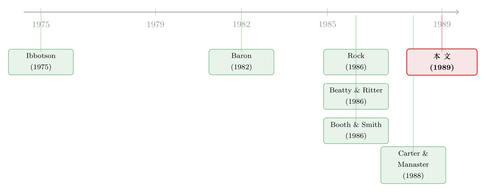

把承销商和发行人变成同一个人，新股还会打折吗？
本文读的是 Muscarella & Vetsuypens (1989, Journal of Financial Economics)：他们找到 38 家「自己卖自己股票」的投资银行 IPO——发行人和承销商是同一个人，按 Baron (1982) 的信息不对称理论，这种发行【不该】被低估。可数据偏偏给出 7.12% 的显著抑价（t = 3.69），而且承销商话语权最大的那一档，抑价反而最高（13.23%）。一个被设计来支持理论的「干净样本」，最后把理论否掉了。
1 一个几乎太好的「实验」
新股上市第一天就大涨，这件事在金融学里几乎是一条铁律。Ibbotson (1975) 早就报告过：1960–1969 年那批新发行，平均初始收益高达 11.4%。你今天打到一只新股，明天开盘就赚一笔，这在直觉上简直像「天上掉馅饼」——可问题恰恰在这里：发行人明明可以把价格定得更高，为什么偏要把钱留在桌上？
为这个谜题，金融学界写了一摞又一摞的解释。其中一个很优雅的答案，来自 Baron (1982)。他的故事是这样的：投资银行比发行公司更懂资本市场此刻的冷热。发行人不懂，又没法盯着银行有没有尽力去卖，于是只好把「定价权」委托给银行。可一旦把定价权交出去，银行为了让自己卖得轻松，就会倾向于把价格压低一点——抑价，是信息不对称下委托代理关系的产物。换句话说，定价偏低，是发行人为「自己看不清、又管不住承销商」付出的代价。
这是一个漂亮的理论。但漂亮的理论怎么检验？麻烦在于，信息不对称这东西看不见摸不着，你没法直接量「发行人到底比承销商少知道多少」。
接着，一个自然的问题是：有没有哪种发行，天生就【没有】这种信息差？
本文两位作者想到了一个近乎完美的设定——自营发行 (self-marketed offerings)：让投资银行自己去 IPO，并且亲自参与自家股票的承销分销。这时候，发行人和承销商是同一拨人，坐在同一张桌子上。Baron 模型赖以成立的那道信息鸿沟，从定义上就被填平了。
于是 Baron 模型给出一个极其干脆的预言：
如果抑价真的源于发行人与承销商之间的信息不对称，那么这些「自己卖自己」的投行 IPO 就【不应该】被抑价。
这就是全篇的支点。一个能把理论逼到墙角的判别性检验 (discriminating test)，胜过一百条模棱两可的回归。
2 数据：38 家「自己卖自己」的投行
要做这个检验，得先有一批投行 IPO。这在 1970 年之前根本不存在——纽约证券交易所 (NYSE) 当时规定，所有交易所会员的证券承销公司必须是私人持股，不许上市。
转折发生在 1969 年 9 月：NYSE 在证监会 (SEC) 首肯下，拟定了允许会员公司公开上市的方案，并于 1970 年 3 月正式通过。第一家吃螃蟹、通过公开发行募资的 NYSE 会员，是 1970 年 4 月 9 日的 Donaldson, Lufkin & Jenrette。闸门一开，承销商们鱼贯而出。
作者把样本拉到 1970–1987 年，最终锁定 38 家自己参与了自家证券分销的投行 IPO。这里有一个关键的制度细节值得停一下：按全美证券交易商协会 (NASD) 的 Schedule E，自营发行必须满足「合格独立承销商 (qualified independent underwriter)」要求——发行价不得高于一家独立承销商推荐的价格；但若是 包销 (firm commitment) 且自营部分不超过总募资额的 10%，这条豁免。
为什么这个细节重要？因为它制造了一个【对本文不利】的偏误。独立承销商相当于给价格设了一道「天花板」，而投行对自家证券的市场需求，往往比那个外来的独立承销商判断得更准。这意味着：自营发行如果真有抑价，本应被这道天花板压低，从而更难被发现。换句话说，制度本身是站在 Baron 那一边的——这让后面的结论更有分量。
作者还把这 38 家按「发行人介入程度」分了档。投行可以以四种身份卷入自家发行：主承销 (lead manager)、联席承销 (comanager)、承销团成员、以及选定交易商 (selected dealer)。身份越靠前，发行人对定价的影响力越大；当它是主承销时，话语权最大。Baron 的逻辑推到底就是：发行人对价格的掌控越强，信息不对称的空间越小，抑价就该越轻。这给出了一个【档内】的二次预言，后面会成为压垮模型的最后一根稻草。
初始收益怎么算？作者用 Standard & Poor's Daily Stock Price Record 和道琼斯新闻检索 (Dow Jones News Retrieval) 取后市价格，把每只股票从发行价到首个交易日收盘价的相对涨幅定义为初始收益，再减去同日 S&P 500 综合指数的涨跌，得到 市场调整收益 (market-adjusted return)。
3 主要结果：理论被自己的「干净样本」否掉
先看全样本。38 家自营投行 IPO，首日平均市场调整收益是 7.12%，在 0.05 水平上显著异于零（t = 3.69）；38 家里有 28 家初始收益为正，二项检验在 0.05 水平上拒绝了「正收益比例等于 50%」。
7.12% 是什么概念？它和同期普通 IPO 的抑价幅度【基本一个量级】。为了打消「这只是投行这个行业的特殊脾气」的疑虑，作者拿自己另一份工作论文里、1983 年 1 月起公告的非投行 IPO 样本来对照，那批的平均初始收益是 7.60%；一个卡方检验无法拒绝两组中位数相等的假设。也就是说：投行自己卖自己，抑价得和别人一样狠。
这已经够让 Baron 难堪了。但真正致命的一击，藏在分档里。
按发行人介入程度拆开：
- 主承销（17 家）：
13.23%，t = 4.33——而且 17 家无一例外，初始收益全部非负； - 非主承销（21 家）：
2.17%，t = 1.14，不显著； - 联席承销（5 家）：
2.36%，t = 0.88； - 选定交易商（15 家）：
2.60%，t = 1.04； - 分销商（1 家）：
-5.40%。
主承销那一档的 13.23%，不仅显著异于零，还显著高于非主承销的 2.17%（两者之差 t = 3.19）。
于是反转出现了：发行人对定价掌控力最强的那一组，抑价不是最轻，而是最重。 这和 Baron 的预言【方向相反】。如果抑价真的来自「发行人管不住承销商」，那么当发行人就是承销商、对价格说一不二时，抑价本该消失；可现实是它反而放大到了 13% 以上。一个被精心挑选来当「证人」的样本，最后成了「反方证人」。
（顺带一提，按分销方式看：包销 (FC) 28 家平均 6.27%、t = 2.81；尽力推销 (BE) 10 家平均 9.50%、t = 2.42。不过 10 家尽力推销里有 9 家同时是主承销，所以「介入程度」和「分销方式」这两个效应在这里纠缠在一起，不好干净地分开——作者对此很诚实。）
4 把统计的「后门」一一关上
一个聪明的读者读到这里，会立刻起疑：38 家，样本这么小，初始收益又是出了名的右偏 (skewed)，那个 t = 3.69 会不会是偏度把它「吹」上去的？
作者料到了这一问，做了一道很经典的稳健性处理。他们仿照 Ibbotson 的做法，跑了如下的市场模型回归：
$$ R_i = a + b\,R_{mi} + e_i $$
其中各项的含义是：\(R_i\) 是第 \(i\) 家投行的初始收益，\(R_{mi}\) 是与之同一交易日的市场收益，\(e_i\) 是残差，截距 \(a\) 度量市场调整后的初始表现，\(b\) 是斜率系数。按构造，估计出的截距 \(a\) 与表里那个市场调整平均初始收益几乎一致。
接着是关键一步：他们用 自助法 (bootstrap)，从这 38 个观测残差里【有放回地】反复抽样，做了 500 次模拟，每次算一遍平均残差。结果——500 次模拟里，没有任何一次的模拟均值超过回归给出的估计值。这等于说：即便把偏度的「捣乱」算进去，观察到这么大的抑价仍是极小概率事件。偏度，没法解释掉 7.12%。
后市表现也透露了同样的故事。从首日收盘到第 20 个交易日，全样本平均收益 -4.98%（t = -1.62，不显著）。但这点向下的漂移，几乎全由「非主承销」那一摊贡献：非主承销 -10.12%（t = -3.58），其中选定交易商 -13.06%（t = -3.90）；而主承销那一档后市是 +1.38%（t = 0.24），稳稳的。换句话说，主承销组在首日大涨之后并没有「回吐」，它的抑价是实打实的，不是开盘那一下的噪声。
5 文献脉络：在抑价的「解释竞赛」里钉下一个否证
把这篇论文放回它所处的时代，会看得更清楚。
故事从 Ibbotson (1975) 开始——他把「新股系统性抑价」确立为一条需要被解释的经验规律。规律一旦立住，理论家们就开始供给解释。其中两条主线最重要：一条是 Baron (1982)，把抑价归因于发行人与承销商之间的信息不对称；另一条是 Rock (1986)，把抑价归因于「知情投资者」和「不知情投资者」之间的赢家诅咒 (winner's curse)——注意，Rock 的模型也同样推出 IPO 会被抑价。

这就埋下了一个棘手的问题：好几个互相竞争的假说，都预言「IPO 会被抑价」。 光看到抑价，根本分不清是谁对——这正是 Smith (1986) 综述里点出的困境。同一时期，Beatty 与 Ritter (1986)、Booth 与 Smith (1986) 的认证假说 (certification hypothesis)、Carter 与 Manaster (1988) 的承销商声誉、Johnson 与 Miller (1988) 的投行声望，都在从不同角度切这块蛋糕。
本文的聪明之处，就在于它不去和这一堆假说【正面拼解释力】，而是设计了一个能把 Baron 单独拎出来证伪的判别性检验。自营发行让信息不对称在定义上归零，于是 Baron 必须给出「不抑价」的预言，而其它假说（比如 Rock 的赢家诅咒、认证假说）并不依赖发行人—承销商的信息差，因此并不要求这些发行不抑价。数据一出来，Baron 被否，而别的解释依旧站着。论文结尾那句话说得很克制也很到位：抑价是一种普遍现象，无法仅靠发行人与承销商之间的信息不对称来解释，其它解释——包括 Smith (1986) 提到的那些——值得进一步研究。
这条「用一个干净样本去否一个具体理论」的思路，在 IPO 抑价文献里影响深远。后来的研究继续从赢家诅咒（关于发行人为何对「把钱留在桌上」无动于衷，可参见《盖茨的那场「不高兴」：新股为什么总把钱留在桌上》）、承销商托价（《新股「打折」之谜，也许根本就不存在》）、流动性补偿（《打折卖新股，是为了补偿你「将来不好脱手」的那份担心》）等方向继续追问。而「新股到底是不是真被低估了」这个更底层的问题，也一直有人在掀（《新股到底是「打折」卖，还是「溢价」卖？》）。
6 评论与延伸（Q&A + 研究方向）
(a) 几个可能的疑问
Q：自营发行真的把信息不对称「归零」了吗？会不会发行人和投资者之间仍有信息差？
Baron 模型针对的是发行人与承销商之间的信息差，本文确实把这一层填平了。但它【没有】消除发行人/承销商与外部投资者之间的信息差——而那恰恰是 Rock (1986) 赢家诅咒的战场。所以本文的逻辑是精确的：它只证伪 Baron，不证伪 Rock。事实上主承销组
13.23%的抑价，反而和「投资者层面的信息不对称」类解释相容。
Q：38 个样本会不会太小，结论站不住？
样本确实小，这是先天约束（能自己卖自己的投行本就不多）。但作者做了三道防护：二项检验、500 次自助法模拟、以及和外部 IPO 样本的中位数比较，结论都稳。更关键的是，证伪不需要大样本——只要「该为零的地方显著为正」，一个反例就够。
Q：那个「合格独立承销商」的天花板，会不会反而制造了抑价？
方向恰恰相反。这道天花板压的是【发行价上限】，只会让抑价被低估、更难被发现。作者明确指出这是一个对本文不利的偏误。结果是在这种逆风下还测出了显著抑价，说明真实效应只会更强。况且实务上投行会「货比三家」直到找到愿意背书其报价的独立承销商，约束并不真的咬人。
Q：主承销组抑价更高，会不会只是「尽力推销」掺进来的杂质？
这是本文最诚实的软肋。10 家尽力推销里有 9 家同时是主承销，介入程度和分销方式高度共线，没法干净切分。所以「主承销抑价
13.23%」里，有多少来自「掌控力强」、有多少来自「尽力推销合约本身的特性」，本文无法判定。但无论归因如何，它都和 Baron「掌控力强→抑价轻」的预言反向。
Q：抑价幅度会随时间变化，跨 1970–1987 这么长的窗口去比，公平吗？
作者注意到了抑价的时变性，所以对照组特意选了与子样本【同期】公告的 IPO（
7.60%vs7.12%），而不是拿全历史平均去比。这一步处理得当，削弱了「时点错配」的担忧。
Q：这篇否掉了 Baron，是不是说信息不对称就和 IPO 抑价无关了？
不能这么推。本文否的是「发行人—承销商信息差」这一【特定】机制，不是「信息不对称」这一【大类】。投资者之间的信息不对称（Rock）依然好端端地活着。准确的表述是：抑价不能【单独】由发行人与承销商之间的信息不对称解释。
(b) 几个可能的研究问题与提案
1. 把「自营发行」思路搬到公司债一级市场
【经济故事】投行有时也承销并分销自家发行的债券，或在关联发行中既是发行人又是承销团核心。债券一级市场的「抑价」（首日二级市场价高于发行价）近年被重新量化，机制是否同样独立于发行人—承销商信息差，值得用同一把「自营」尺子去测。 【可行性】中。需要 TRACE 首日成交数据 + 承销团结构（Mergent FISD / Bloomberg），识别上靠「自营 vs 非自营」的对照。难点是自营债券发行样本同样稀少，且债券抑价幅度小、噪声大。
2. 自营 IPO 的「天花板」制度作为外生变化
【经济故事】NASD Schedule E 的「合格独立承销商」要求及其 10% 豁免，是一个对定价上限的外生监管楔子。能否用规则修订的时点，做一个 双重差分 (difference-in-differences, DiD)，识别「价格天花板」对抑价的因果效应？ 【可行性】中。需要逐条梳理 Schedule E 的历次修订与生效日，匹配自营发行的发行价/后市价。识别清晰但样本量是硬约束，可能只能做事件研究而非严格 DiD。
3. 主承销 vs 选定交易商的「话语权梯度」与外资承销
【经济故事】本文发现介入程度与抑价正相关（与 Baron 反向）。若把这条梯度推广到跨境发行——当承销团里掺入对本地需求信息更弱的外资承销商时，抑价如何变化？这能把「谁更懂需求」这件事直接量出来。 【可行性】中到高。跨境 IPO 的承销团构成可从招股书提取，外资持有人/承销商身份可识别。识别策略可用承销团的本地—外资构成作为信息劣势的代理变量。
4. 自营发行的后市漂移之谜
【经济故事】本文里非主承销组后市 20 日跌了
-10.12%，主承销组却几乎不动。这种「谁定价、谁不回吐」的横截面差异，是托价行为、还是真实信息含量的差别？ 【可行性】高。只需把样本的后市价格窗口拉长、加入成交量与做市数据，检验是否存在承销商托价的指纹（参见《开盘头十分钟之后，新股就「不动」了》的思路）。数据可得，识别靠承销商身份的横截面对比。
7 我的判断
贡献。 这篇论文短小，却是 IPO 抑价文献里教科书级的「判别性检验」范例。它不和一堆假说比拼解释力，而是构造一个让 Baron 模型【无处可藏】的样本——发行人即承销商，信息差归零——然后让数据说话。结果不仅否掉了「抑价该消失」的预言，还在分档里抓到一个方向完全相反的横截面规律（掌控力越强、抑价越重）。这种「用设计而非回归取胜」的研究品味，到今天依然值得学。
对识别的担忧。 最大的软肋是「介入程度」与「分销方式」的共线：主承销组里塞了 9 家尽力推销发行，没法干净地把两个效应拆开，所以 13.23% 这个最有冲击力的数字，归因上是含糊的。其次，38 个样本终归太小，跨度又长达 18 年，抑价的时变性、制度变迁（Schedule E 的演化）都可能在背景里干扰。作者对这些都很坦诚，没有过度兜售。
后续想看到什么。 我最想看到的，是把这套「自营/关联发行」的识别思路系统地搬到公司债与跨境发行上去，并用更现代的承销团微观数据，把「谁更懂需求」这件原本看不见的事，变成一个可以逐档度量的梯度。如果在债券市场也观察到「掌控力越强、抑价越重」，那么把抑价归因于投资者层面（而非发行人—承销商层面）的信息不对称，就会得到一个跨市场的有力旁证。
参考文献
Baron, D.P. (1982). A model of the demand for investment bank advising and distribution services for new issues. Journal of Finance 37(4), 955–976.
Beatty, R. and Ritter, J. (1986). Investment banking, reputation, and the underpricing of initial public offerings. Journal of Financial Economics 15(1–2), 213–232.
Booth, J. and Smith, R. (1986). Capital raising, underwriting and the certification hypothesis. Journal of Financial Economics 15(1–2), 261–281.
Carter, R. and Manaster, S. (1988). Initial public offerings and underwriter reputation. Working paper (Iowa State University and University of Utah).
Ibbotson, R.G. (1975). Price performance of common stock new issues. Journal of Financial Economics 2(3), 235–272.
Johnson, J.M. and Miller, R.E. (1988). Investment banker prestige and the underpricing of initial public offerings. Financial Management 17(2), 19–29.
Muscarella, C.J. and Vetsuypens, M.R. (1989). A simple test of Baron's model of IPO underpricing. Journal of Financial Economics 24(1), 125–135.